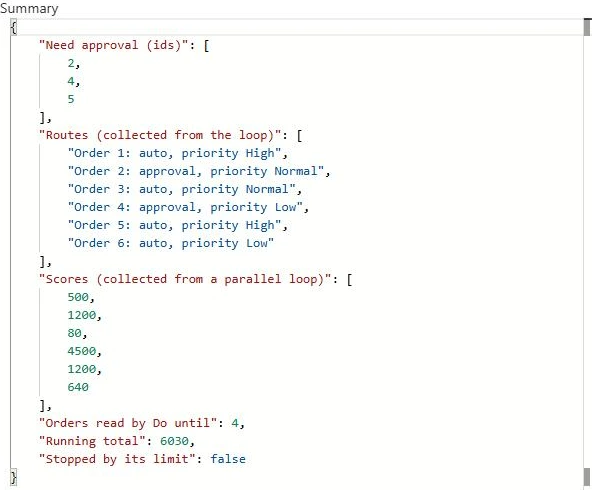
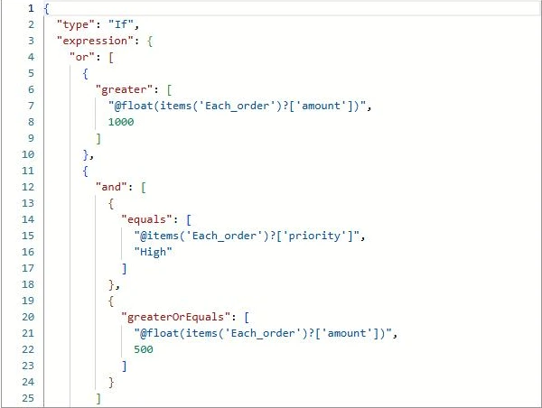
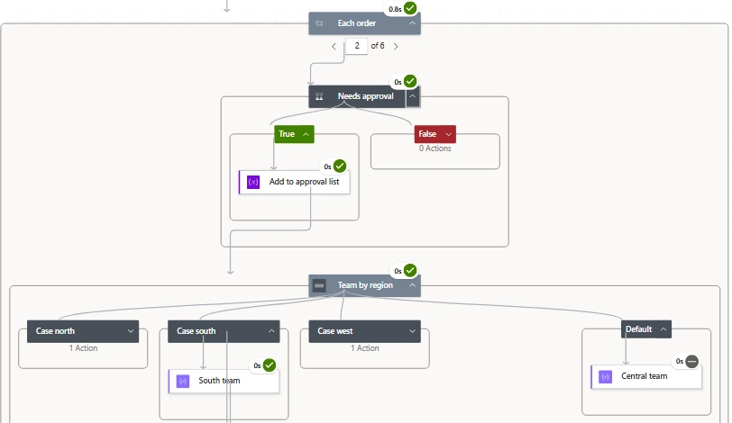
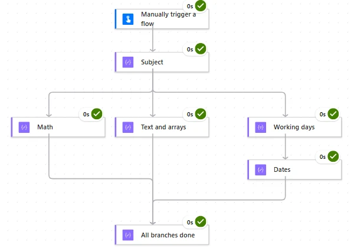

- Power Automate
- Level 1 · Foundations · 6 of 7
Conditions, Switch and loops: the complete guide
Real processes branch and repeat. An order over a limit needs approval, each region has its own team, every row in a list needs the same treatment. This guide covers every building block Power Automate gives you for that, from the basics to the settings and traps that only show up in production.
Start from the root: deciding and repeating
A flow runs its actions top to bottom. Control actions change that order: they choose a path, repeat a set of actions, or run things side by side. Each control action is a container: the actions inside it only run when the container says so.
| Control | Question it answers | Example |
|---|---|---|
| Condition | Yes or no? | Is the amount over 1,000? |
| Switch | Which of several exact values? | North, South or West team? |
| Apply to each | Do this for every item in a list | Check every order |
| Do until | Repeat until something becomes true | Poll until a job finishes |
| Parallel branches | Do these at the same time | Notify two teams at once |
| Scope | Treat these as one group | Try and Catch blocks |
| Terminate | Stop the run now, with this status | Fail with a clear message |
Two more ideas run through the whole guide. A condition is really an expression that returns true or false; the designer's rows are just a friendly way to write it. And loops cost actions: every action inside a loop runs once per item.
The demo data
One demo flow covers every section. It works on six orders. The data is deliberately messy, the way real data is:
[
{ "id": 1, "amount": 250, "region": "North", "priority": "High" },
{ "id": 2, "amount": "1200", "region": "south", "priority": null },
{ "id": 3, "amount": 80, "region": "East" },
{ "id": 4, "amount": 4500, "region": "West ", "priority": "Low" },
{ "id": 5, "amount": 600, "region": "North", "priority": "High" },
{ "id": 6, "amount": 640, "region": "Central", "priority": "Low" }
]- Order 2's amount is text (
"1200"), and its region is lower case. - Order 3 has no priority property at all; order 2's priority is null.
- Order 4's region has a trailing space, and Central has no team of its own.
The flow decides which orders need approval, routes each one to a team, scores them in a parallel loop, and adds amounts in a Do until until the total reaches 3,000. Here is everything it produced in one run:

Condition in depth
Rows and operators
A Condition compares a value on the left with a value on the right using an operator. The designer offers twelve operators:
| Operator | Works on | Watch out for |
|---|---|---|
| is equal to / is not equal to | Text, numbers, booleans, null | Text comparison is case-sensitive: High is not high. |
| is greater than / is greater or equal to | Numbers, dates as ISO text | Text that looks like a number is compared as text. Convert with float() or int(). |
| is less than / is less or equal to | Numbers, dates as ISO text | Same as above. |
| contains / does not contain | Text, arrays | On an array it checks for a whole item, not part of one. |
| starts with / does not start with | Text | Case-sensitive. |
| ends with / does not end with | Text | Case-sensitive; trailing spaces count. |
And, Or and groups
Several rows are joined with And (all must be true) or Or (any can be true). For mixed logic, add a group: a set of rows with its own And/Or, which counts as one row of its parent. The demo's approval rule is amount over 1,000, or (priority High and amount at least 500):

That's why order 5 (600, High) needs approval even though it's under 1,000, and order 1 (250, High) doesn't.
The same condition as an expression
Behind the rows, the Condition stores a logical expression. Code view shows it:

You can write the whole thing as one expression instead: put it on the left of a single row, choose is equal to, and put true on the right.
or(greater(float(items('Each_order')?['amount']), 1000), and(equals(items('Each_order')?['priority'], 'High'), greaterOrEquals(float(items('Each_order')?['amount']), 500)))| Piece | What it does |
|---|---|
items('Each_order')?['amount'] | The current order's amount. ? returns null instead of failing if the property is missing. |
float(...) | Turns "1200" (text) into 1200 (a number), so the comparison is numeric. |
greater(a, 1000) | True when a is more than 1,000. |
and(x, y) | True only when both are true. Takes two or more arguments. |
or(p, q) | True when at least one is true. |
Expressions are better than rows when the logic is long, when you need functions on both sides, or when you want to copy the rule into another action. Rows are easier for other people to read. Pick one style per condition.
Functions you'll use in conditions
| Function | Returns true when | Example |
|---|---|---|
equals(a, b) | a and b are the same value and type | equals(variables('Status'), 'Approved') |
not(x) | x is false | not(empty(...)) |
and(...), or(...) | all / any arguments are true | see above |
greater, greaterOrEquals, less, lessOrEquals | the numeric (or text) comparison holds | less(length(body('Filter_array')), 1) |
contains(collection, value) | text contains a substring, or an array contains an item | contains(createArray('North', 'South'), region) |
empty(x) | x is null, "", [] or {} | empty(triggerBody()?['phone']) |
startsWith, endsWith | text starts / ends with a value | endsWith(toLower(name), '.pdf') |
Data-type traps
- Text that looks like a number.
"1200"compared as text can give surprising answers. Convert withfloat()orint()first. - Null and missing. A missing property with
?becomes null.equals(null, 'High')is simply false, but functions liketoLower(null)fail. Supply a default withcoalesce(). - Case and spaces. Normalise both sides with
toLower()andtrim(). - Booleans.
trueand the text'true'are different. A Yes/No column from SharePoint is a real boolean; a value from a text column is text. - Dates. ISO dates (
2026-11-26T09:00:00Z) compare correctly as text only when both sides use the same format and time zone. Convert first; see dates and time zones in Level 2.
if(): a decision without branches
When the only thing that changes is a value, you don't need a Condition action at all. The if() function picks one of two values inside any field:
concat('Order ', string(items('Each_order')?['id']), ': ', if(greater(float(items('Each_order')?['amount']), 1000), 'approval', 'auto'), ', priority ', coalesce(items('Each_order')?['priority'], 'Normal'))| Piece | What it does |
|---|---|
if(test, a, b) | Returns a when the test is true, otherwise b. Both a and b are worked out, so don't use it to avoid an error. |
coalesce(priority, 'Normal') | Order 2 (null) and order 3 (missing) both get Normal. |
concat(...) | Builds the Route line you saw in the summary, for example Order 2: approval, priority Normal. |
Note that Route uses only the amount rule, so order 5 says auto while the Condition (which also checks priority) put it on the approval list. Two separate decisions, two separate rules: keep rules in one place when they must agree.
if() when one action needs a different value. If both branches of a Condition contain the same action with one field changed, replace it with one action and an if().Switch in depth
Switch takes one value and runs the case whose value matches exactly. If none matches, it runs Default. The demo switches on the region, normalised first:
toLower(trim(items('Each_order')?['region']))| Piece | What it does |
|---|---|
trim(...) | Removes the trailing space in West . |
toLower(...) | Turns South, south and SOUTH into south, so the cases can all be lower case. |

- Case values must be fixed and unique. A case can't hold an expression or dynamic content, and two cases can't share a value.
- Exact match only. No ranges, no contains, no or. For over 1,000, use a Condition.
- Case-sensitive. Normalise the value (as above) rather than adding a case per spelling.
- Up to 25 cases per Switch. More than that usually means the mapping belongs in a settings list or a lookup object.
- Always use Default, even if it only logs the unexpected value. Order 6 (Central) shows why.
- Several values, same actions? Switch can't share a case. Normalise the value first (for example map S and South to south with an
if()), or use a Condition withcontains(createArray('a', 'b'), value).
| Need | Use |
|---|---|
| Yes/no, ranges, several fields, and/or logic | Condition |
| One field, several known exact values | Switch |
| One field, many values that map to data (a team email, a cost centre) | A lookup object or settings list, not a Switch |
| Only a value changes | if() inside the action |
Apply to each in depth
What it loops over
Apply to each takes an array and runs its actions once per item. If you pick a field that belongs to an array item (for example a column from Get items), the designer wraps the action in an Apply to each for you. Giving it a single object instead of an array fails with an error saying it expected an array.
The current item: items() and item()
| Function | Where | Returns |
|---|---|---|
items('Each_order') | Inside the named Apply to each (or nested inside it) | That loop's current item. Use the loop's name, with spaces as underscores. |
item() | Inside Select, Filter array and similar data operations | The item that operation is currently processing. |
In nested loops, items('Outer_loop') and items('Inner_loop') let you reach both current items at once. Name loops before you write expressions: renaming a loop later breaks expressions that use its old name.
Reading a loop's run
The run view shows one iteration at a time, with a counter (2 of 6 above). Use the arrows to step through, or type a number. Each iteration has its own inputs and outputs, so a failing item is easy to find. When an iteration fails, the loop is marked failed, but by default the other iterations still run.
Concurrency: running iterations at the same time

- By default iterations run one at a time, in order. Turning on concurrency control lets them run in parallel, with a degree from 1 to 50.
- Higher isn't always faster: splitting work and the speed of the system you call add overhead, and connectors throttle.
- In nested loops, only the outermost loop's concurrency counts; inner loops always run one at a time.
- With concurrency on, iterations finish in any order, and variables become unpredictable: two iterations can read and write the same variable at once. Keep loops that change variables sequential.
Collecting results without variables
Here's a pattern worth knowing. Reference an action that is inside the loop from after the loop, and you get an array of its output from every iteration, in item order. The demo's Summary uses outputs('Route') and outputs('Score'):
- Routes holds six lines, one per order.
- Scores came from a loop running five iterations at a time, and the array is still in item order (500, 1200, 80, 4500, 1200, 640): each High-priority amount doubled.
That's safe with concurrency, needs no Initialize or Append actions, and saves one action per item. When you only need to transform each item, a Select outside any loop is better still (see Select, Filter array and Join in Level 2).
Limits and cost
- An Apply to each processes up to 100,000 items (5,000 on the Low performance profile). Filter larger arrays before looping.
- Each action inside runs once per item and counts as a request: two actions over 10 items is 21 actions including the loop itself.
- Actions can nest up to 8 levels deep. Use child flows if you need more.
There's no Break
Apply to each always visits every item. To process only some, filter first:
Filter array (From: orders, where: greater(float(item()?['amount']), 1000))
Apply to each (over the filtered result only)To stop as soon as something is found, use a Do until with an index instead of Apply to each, or find the item directly with Filter array and first().
Do until in depth
Do until repeats its actions until a condition becomes true. The condition is checked after each pass, so the actions always run at least once. The demo adds order amounts until the running total reaches 3,000:
- Pass 1: 250. Pass 2: 1,450. Pass 3: 1,530. Pass 4: 6,030, and the condition
greaterOrEquals(variables('Running'), 3000)is true, so the loop stops. - The summary shows Orders read by Do until 4, Running total 6030, Stopped by its limit false.
| Setting | Default | Meaning |
|---|---|---|
| Count | 60 (maximum 5,000) | Most passes allowed |
| Timeout | PT1H (one hour) | Longest the loop may run, as an ISO 8601 duration |
The loop stops at whichever comes first: the condition, the count or the timeout. When a limit stops it, the loop still shows Succeeded. That's why the demo checks less(variables('Running'), 3000) afterwards: if the condition isn't true when the loop ends, a limit stopped it. The Do until page in Level 5 shows a loop that never finishes, so you can see this happen.
iterationIndexes('Loop_name')gives the current pass number (from 0), but only inside a Do until.- A variable can't be set from itself (
Set variableRunning toadd(variables('Running'), 1)is refused). Use Increment variable, as the demo does, or a Compose. - For polling (wait for a job, a file or an approval status), put a Delay inside the loop, and size count × delay to fit the timeout.
Parallel branches
Steps don't have to run one after another. When two or more actions all run after the same step, they run at the same time, in parallel branches. A step placed after all of them waits until every branch has finished.

To add one, select the + between two actions and choose Add a parallel branch. Use them for independent work, such as notifying two teams or reading two lists. Don't let two branches change the same variable: the order isn't guaranteed.
Nesting, Scope and Terminate
- Nesting. Conditions, Switches and loops can sit inside each other, up to 8 levels. Past two levels, flows become hard to read: move the inner logic into a lookup object, a child flow or a settings list.
- Scope groups actions so they succeed or fail together. It's the basis of try/catch error handling (Level 4).
- Terminate ends the whole run straight away with Succeeded, Failed or Cancelled, and an optional message. It doesn't exit just a loop; use it when the run itself should stop.
- The Response action (for Power Apps and HTTP callers) can't be placed inside a loop.
Which one to use
| Situation | Best choice |
|---|---|
| Do something only sometimes | Condition |
| Choose a value, not an action | if() in the field |
| Route by one field's exact value | Switch (with Default) |
| Same action for every item | Apply to each |
| Transform every item into a new shape | Select (no loop) |
| Keep only some items | Filter array (no loop) |
| Repeat until something is true, or wait for something | Do until (with a Delay and a limit check) |
| Independent work at the same time | Parallel branches, or loop concurrency |
New to this? Start from the basics optional
Branch: a path the flow can take. Only one branch of a Condition runs per decision.
Iteration: one pass of a loop. In the run view the counter (2 of 6) lets you inspect each pass separately.
Expression: a small formula, such as greater(x, 1000), that the flow works out while it runs.
Default case: the Switch branch that runs when no case matches.
Build it step by step optional
- Create an instant flow. Add a Compose named Orders and paste the demo data.
- Initialize three variables: NeedApproval (Array,
[]), Running (Float, 0) and Index (Integer, 0). - Add Apply to each named Each order over
outputs('Orders'). - Inside it, add a Condition named Needs approval: switch the top to Or, add the amount row, then Add group with the priority and amount rows joined by And. In True, add Append to array variable NeedApproval with the order id.
- Below it, add a Switch on
toLower(trim(items('Each_order')?['region']))with cases north, south and west, each holding a Compose with the team name, and a Compose in Default. - Add a Compose Route with the
if()andcoalesce()expression above. - After the loop, add a second Apply to each Score in parallel, turn on concurrency (degree 5) and add a Compose Score:
mul(float(items('Score_in_parallel')?['amount']), if(equals(items('Score_in_parallel')?['priority'], 'High'), 2, 1)). - Add a Do until with condition
greaterOrEquals(variables('Running'), 3000), count 10, timeout PT10M. Inside: Increment Running byfloat(outputs('Orders')?[variables('Index')]?['amount']), then Increment Index by 1. - Finish with a Compose Summary using
variables('NeedApproval'),outputs('Route'),outputs('Score'), the two variables andless(variables('Running'), 3000). - Test, then step through the iterations of Each order to watch different branches and cases run.
Common mistakes
- Comparing text with a number.
"1200"isn't 1200 until you wrap it infloat(). - Case and spaces: south doesn't match South, and West doesn't match West. Normalise with
toLower()andtrim(). - Calling a function on a value that can be null (
toLower(null)fails). Usecoalesce()or check withempty()first. - A Switch without a Default, so unexpected values silently do nothing.
- Turning on concurrency for a loop that sets or appends to variables. Collect outputs after the loop instead.
- Looping just to transform or filter. Select and Filter array do it in one action.
- Loops inside loops: 500 × 500 is 250,000 actions. See Avoiding nested loops in Level 5.
- Trusting a Do until that shows Succeeded. Check afterwards whether its condition is actually true.
- Duplicating a whole action in both branches of a Condition to change one value. Use
if(). - Renaming a loop after writing expressions that use
items('Old_name').